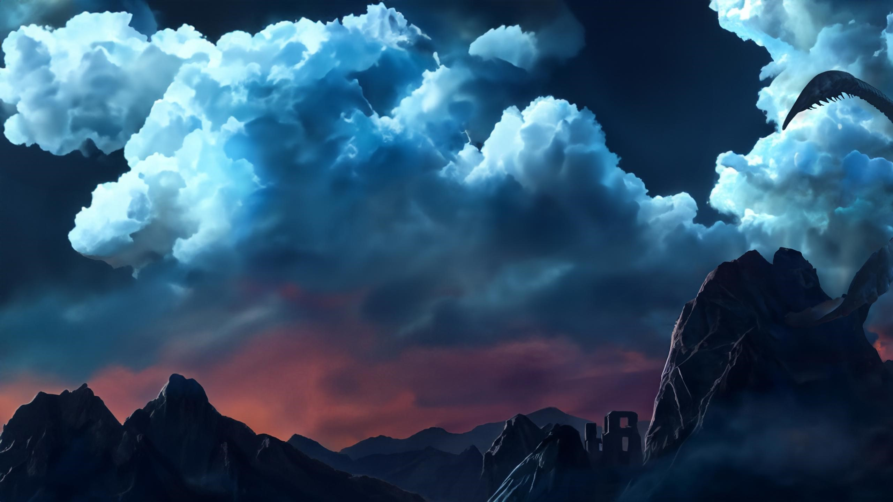
My Baldur's Gate 3 Character
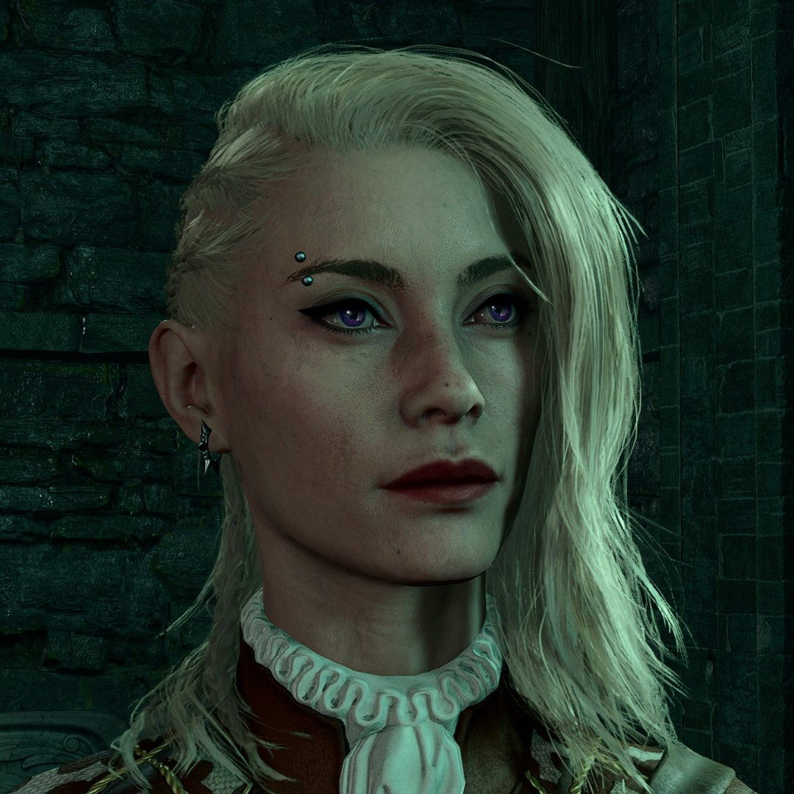
Lara
Human
Humans are the most adaptable and ambitious people among the common races. Whatever drives them, humans are innovators, the achievers, and the pioneers of the world.
Bard
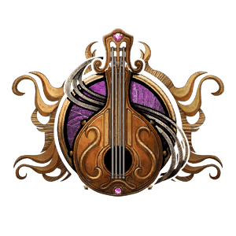
You know music is more than a fancy - it is power. Through study and adventure, you have mastered song, speech, and the magic within.
Companion
Companions are playable characters who can join and fight alongside the player. Each has their own motivations, personalities, and affinity that increase or decrease according to the player's choices. At high approval levels, many companions can be romanced. Conversely, a companion may leave the party or even try to kill the player if their approval becomes too low.
Origin Companions
Origin companions are playable characters with rich backgrounds and ties to the world and the events of the game. Each Origin can be selected as a player character as an alternative to making a custom character. These origin companions can be recruited shortly after completing the Prologue.
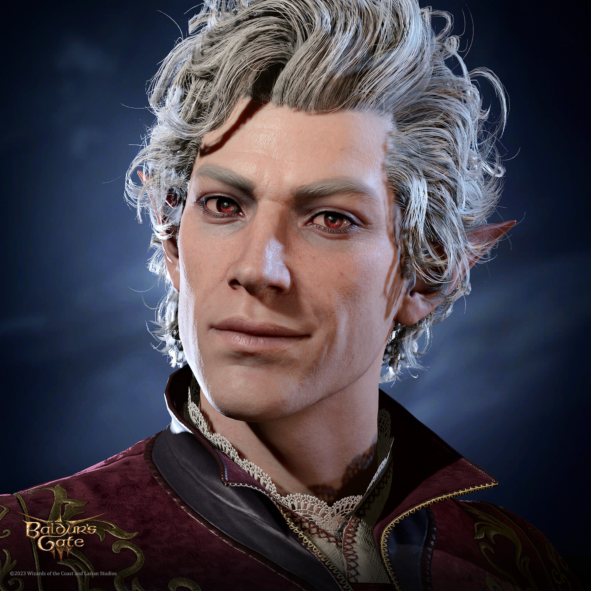
Astarion
Elf
Elves are a magical people of otherworldly grace, living in the world but not entirely part of it.
Subraces
- High Elf
- Wood Elf
Rogue
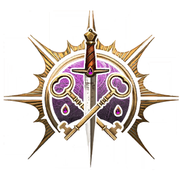
With stealth, skill and uncanny reflexes, a rogue's versatility lets them get the upper hand in almost any situation.
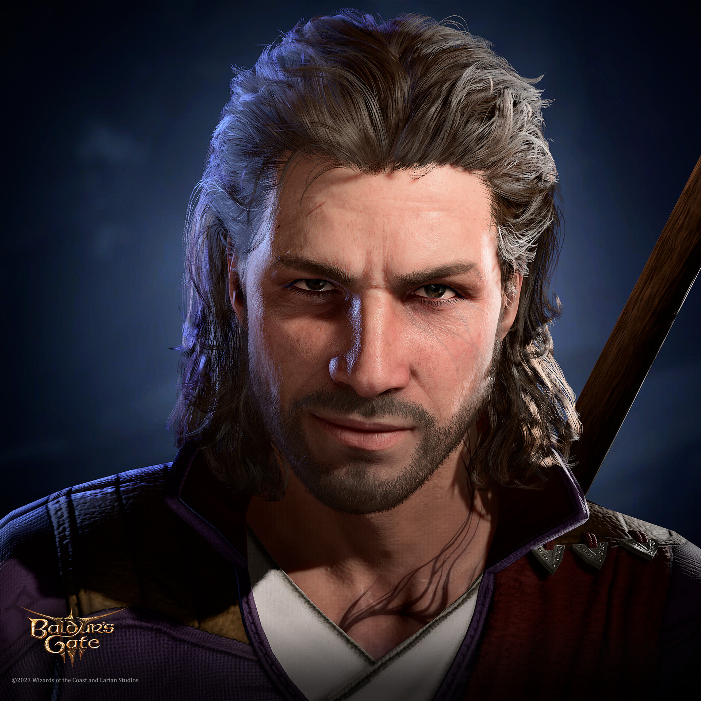
Gale
Human
Humans are the most adaptable and ambitious people among the common races. Whatever drives them, humans are innovators, the achievers, and the pioneers of the world.
Wizard
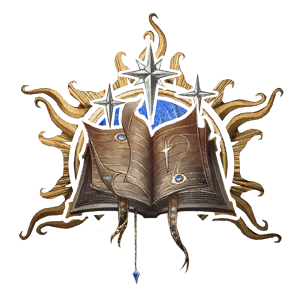
Wizards master the arcane by specialising in individual schools of magic, combining ancient spells with modern research.
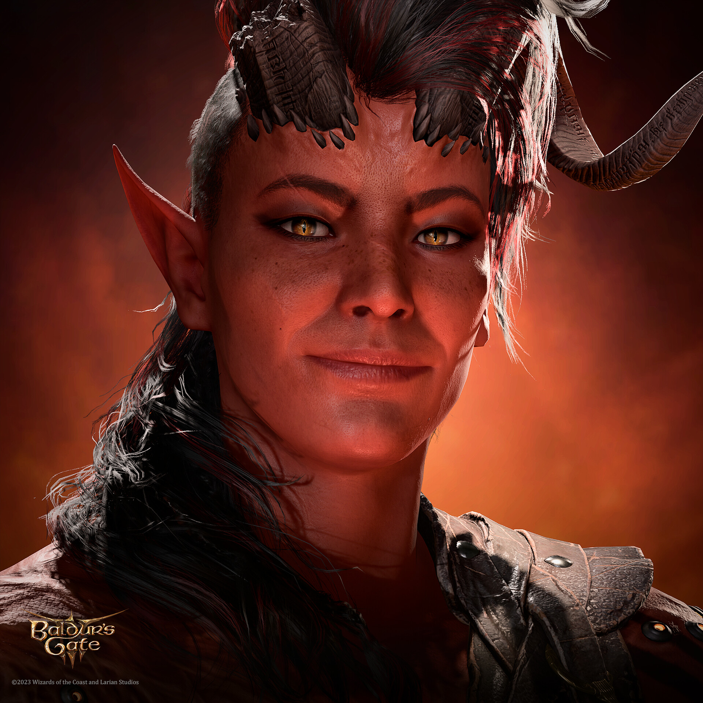
Karlach
Tiefling
To be greeted with stares and whispers, to suffer violence and insult on the street, to mistrust and fear in every eye: this is the lot of the tiefling.
Subraces
- Asmodeus Tiefling
- Mephistopheles Tiefling
- Zariel Tiefling
Barbarian
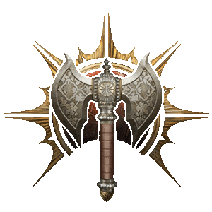
The strong embrace the wild that hides inside - keen instincts, primal physicality, and most of all, an unbridled, unquenchable rage.
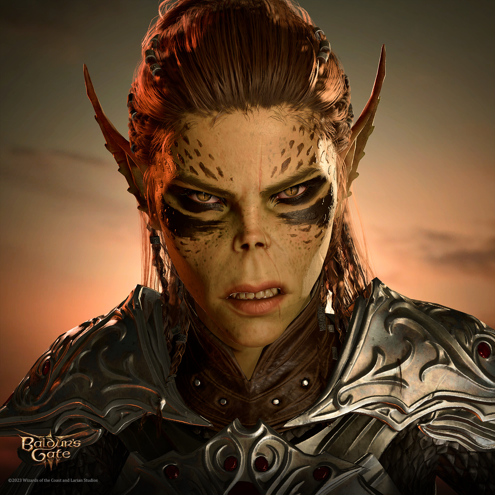
Lae'zel
Githyanki
Githyanki complement their physical prowess with psionic might, instilled in them by mind flayers and cultivated over eons in the Astral Plane.
Fighter
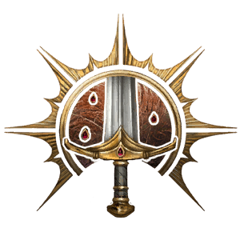
Fighters have mastered the art of combat, wielding weapons with unmatched skill and wearing armour like a second skin.
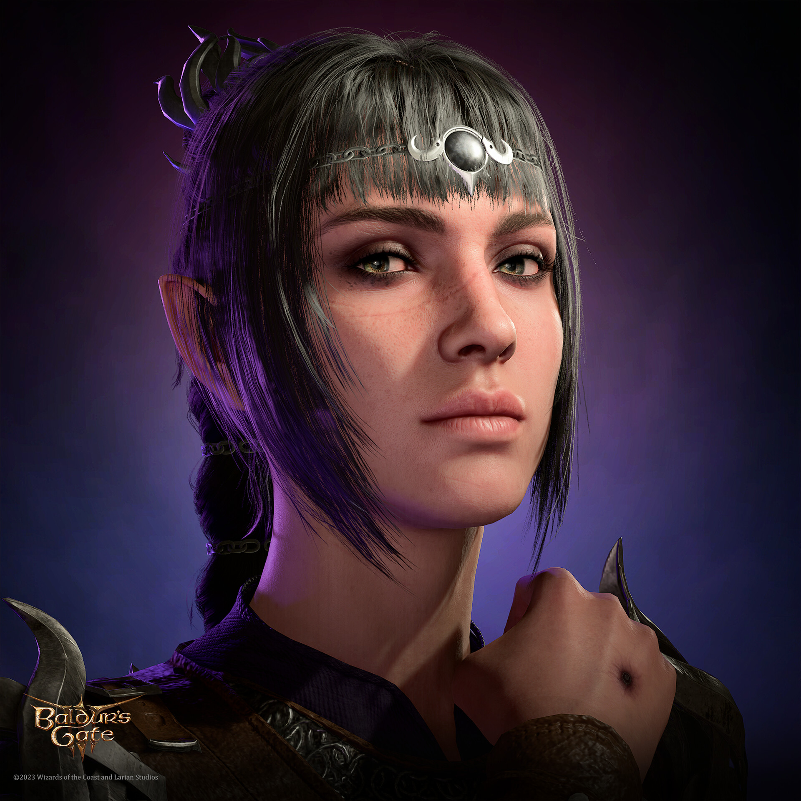
Shadowheart
Half-Elf
Half-elves combine what some say the best qualities of their elf and human parents.
Subraces
- High Half-Elf
- Wood Half-Elf
- Drow Half-Elf
Cleric
 Clerics are representatives of the gods they worship, wielding potent divine magic for good or ill.
Clerics are representatives of the gods they worship, wielding potent divine magic for good or ill.

Wyll
Human
Humans are the most adaptable and ambitious people among the common races. Whatever drives them, humans are innovators, the achievers, and the pioneers of the world.
Warlock
 Bound by a pact to an all-powerful patron, warlocks trade their loyalty for supernatural abilities and unique magic.
Bound by a pact to an all-powerful patron, warlocks trade their loyalty for supernatural abilities and unique magic.